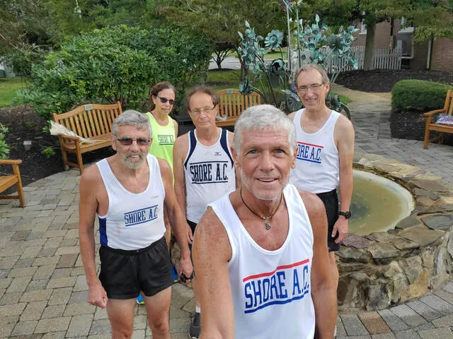
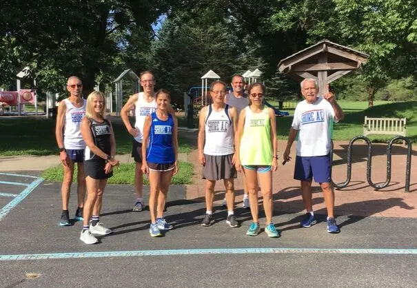
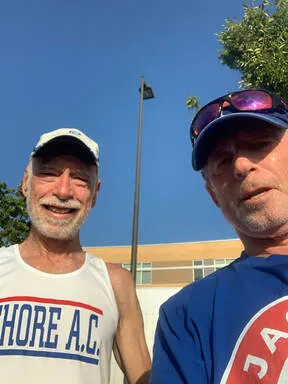

Shore AC Results for the 2020 Boulder RR National Virtual Labor Day 1M/5K/10K Challenge

September 12, 2020: Gathered beside the 9/11 memorial at Colts Neck Town Hall, a contingent of Shore AC athletes records contentment with their just-run mile race. Left-to-right: Harry Nolan, Leslie Nowicki, Przemek Nowicki, Mike Mooney and Scott Linnell.

September 13, 2020: On the final day of the National Virtual Labor Day Challenge, Shore AC harriers strive to run their best at Thompson Park in Lincroft. Left to right: Reno Stirrat, Susan Stirrat, Scott Linnell, Sue Patla, Przemek Nowicki, Mark Leary, Leslie Nowicki and John Kuhi.
Results for Shore AC Athletes
September 4-13. Race recap here by Running Professor Paul Carlin.
September 4-13. Race recap here by Running Professor Paul Carlin.
#x Shore AC 60+ Women A: 69.15%
Name Age Distance Time Age Grading Location
Sue Patla 62 5K 25:51 73.31% * Thompson Park
Susan Stirrat 65 1M 8:11 68.88% * Denville Roads
Kathy Packowski 64 5K 29:48 65.27% * Belmar boardwalk
#x Shore AC 60+ Men A: 81.41%
Name Age Distance Time Age Grading Location
John Kilduff 69 1M 6:06 82.81% * Track in Virginia
Reno Stirrat 66 5K 20:24 82.03% * Thompson Park
David Huse 62 5K 19:45 81.81% * Princeton U. Track
Mike Mooney 64 1M 5:57 81.04% * Colts Neck Town Hall
Scott Linnell 64 1M 6:00 80.36% * Colts Neck Town Hall
Harry Nolan 73 1M 6:58 76.32% Colts Neck Town Hall
Spider Rossiter 68 1M 6.52 72.82% Track in Virginia
Przemek Nowicki 75 1M 7:44 70.98% Colts Neck Town Hall
Mike Washakowski 68 5K 24:44 68.94% Eatontown 5K
John Kuhi 76 5K 35:00 53.57% Thompson Park
Shore AC 60+ Men Reach New Performance Height
This summer, an epidemic swirled through the Shore Athletic Club. No, we're not talking COVID-19 (and our best wishes to any afflicted with the dreaded disease), It was the injury bug! Ailments claimed several of our top age 60+ men and practically wiped out our 60+ women's team. But did that stop us from participating in the third and final Boulder National Virtual Challenge? Make no bones about it: we showed up for the Labor Day event!! In fact, our 60+ men's team achieved something that it may not have done in 7 years or longer: all five scoring members of the team exceeded 80% age grading. This was especially remarkable considering that new and more stringent age grading tables went into effect earlier this year. As for our 60+ ladies, their much-depleted ranks failed to three-peat and sweep the national series. But, hey, having a women's team at all for the Labor Day Challenge represented an accomplishment.
The Shore AC men's 60+ squad started their quest for success far away from the Jersey shore. John Kilduff debuted his athletic prowess at his new home in northern Virginia by smacking down a 6:06 mile, which at age 69 gave John an admirable 82.81% age grading. Meanwhile, further up the Northeast Corridor in Princeton, teammate David Huse fashioned his own heroics by spinning a 19:45 on the university's famous track. That impressive time earned the 61-year-old club rookie a superb age grading of 81.81%. The scene then shifted closer to home base, as 66-year-old Reno Stirrat sailed to a 20:24 5K in Thompson Park, garnering an encouraging 82.03% age grading. Reno's effort was truly triumphant, considering that it was his first race after two months spent rehabilitating his back and hamstring muscles. Happily, Reno's muscles now appear to be fully healed. Close by at Colts Neck Town Hall, 64-year-old Mike Mooney and his contemporary Scott Linnell pushed each other to their limits in a mile race. Side-by-side through 1200 meters, Mike pulled ahead down the finishing straightaway to cross in 5:57 while Scott followed close behind in 6:00. Their respective age gradings of 81.04% and 80.36% delivered the much-sought all-80+ result for Shore AC's 5 scoring team members. And we even did this without the services of reliable 60+ runners Kevin Dollard and Hal Leddy, who were both sidelined by bodily mishaps. Happily, the team received contributions from other 60+ stalwarts. Historical powerhouse Harry Nolan continued his comeback attempt at age 73 by powering through the mile at Colts Neck Town Hall in 6:58 to notch a 76.32% age grading. Harry's elder teammate, 75-year-old Przemek Nowicki, followed in 7:44 to nail down a 70.98% age grading. Shore AC veteran Spider Rossiter gave the 1 mile option a spin and landed a solid 6:52 to earn a 72.82% age grading. Long-time coach John Kuhi tried his luck with the 5K distance, squeezing out a credible 35:00 from sore legs to register a 53.57% age grading. Finally, Mike Washakowski selected a *real* race for his contribution. His fine 24:44 in the September 7 Eatontown 5K gifted the 68-year-old with a worthy 68.94% age grading. Well done gentlemen!
Alas for the Shore AC 60+ women, a three-peat was not in the cards.Had the ladies managed to win the Labor Day Challenge, they would have made a clean sweep of the three-race Boulder National Virtual Series. However, ace harrier Barbara Donelik, who led the team to victory in the first two races with age gradings close to 90%, was nursing a sore muscle and made the difficult decision to sit out this race. Likewise, Diane Rothman, Kim Hart and Dawn Ciccone, all key members of the two prior winning teams, were unavailable for the Labor Day Challenge. In fact, when the Labor Day Challenge began, it appeared that Shore AC would not have enough ladies to field a team. At first, Kathy Packowski was our lone participant. She got the ball rolling with a sturdy 29:48 5K performance to rack up a 65.27% age grading. Newcomer Sue Patla then climbed aboard the Good Ship Shore AC. She started her SAC career on the right foot, speeding to a 25:51 gem on a 5K course in Thompson Park to polish off an age grading of 73.31%. The Good News Parade continued when Susan Stirrat, who had broken a toe several weeks prior and had to wear a protective boot, got clearance from her podiatrist to resume running. Susan cautiously tackled the 1 mile distance. Though her time of 8:11 didn't rank as one of her better achievements, it still meant that we had enough women for a team! Susan's mile time translated to an age grading of 68.88%. Although the ladies, like the men, finished in last place, they were proud to have "shown up" for the final match of the 2020 Boulder National Virtual Challenge. Kudos to you gals!
The Shore AC men's 60+ squad started their quest for success far away from the Jersey shore. John Kilduff debuted his athletic prowess at his new home in northern Virginia by smacking down a 6:06 mile, which at age 69 gave John an admirable 82.81% age grading. Meanwhile, further up the Northeast Corridor in Princeton, teammate David Huse fashioned his own heroics by spinning a 19:45 on the university's famous track. That impressive time earned the 61-year-old club rookie a superb age grading of 81.81%. The scene then shifted closer to home base, as 66-year-old Reno Stirrat sailed to a 20:24 5K in Thompson Park, garnering an encouraging 82.03% age grading. Reno's effort was truly triumphant, considering that it was his first race after two months spent rehabilitating his back and hamstring muscles. Happily, Reno's muscles now appear to be fully healed. Close by at Colts Neck Town Hall, 64-year-old Mike Mooney and his contemporary Scott Linnell pushed each other to their limits in a mile race. Side-by-side through 1200 meters, Mike pulled ahead down the finishing straightaway to cross in 5:57 while Scott followed close behind in 6:00. Their respective age gradings of 81.04% and 80.36% delivered the much-sought all-80+ result for Shore AC's 5 scoring team members. And we even did this without the services of reliable 60+ runners Kevin Dollard and Hal Leddy, who were both sidelined by bodily mishaps. Happily, the team received contributions from other 60+ stalwarts. Historical powerhouse Harry Nolan continued his comeback attempt at age 73 by powering through the mile at Colts Neck Town Hall in 6:58 to notch a 76.32% age grading. Harry's elder teammate, 75-year-old Przemek Nowicki, followed in 7:44 to nail down a 70.98% age grading. Shore AC veteran Spider Rossiter gave the 1 mile option a spin and landed a solid 6:52 to earn a 72.82% age grading. Long-time coach John Kuhi tried his luck with the 5K distance, squeezing out a credible 35:00 from sore legs to register a 53.57% age grading. Finally, Mike Washakowski selected a *real* race for his contribution. His fine 24:44 in the September 7 Eatontown 5K gifted the 68-year-old with a worthy 68.94% age grading. Well done gentlemen!
Alas for the Shore AC 60+ women, a three-peat was not in the cards.Had the ladies managed to win the Labor Day Challenge, they would have made a clean sweep of the three-race Boulder National Virtual Series. However, ace harrier Barbara Donelik, who led the team to victory in the first two races with age gradings close to 90%, was nursing a sore muscle and made the difficult decision to sit out this race. Likewise, Diane Rothman, Kim Hart and Dawn Ciccone, all key members of the two prior winning teams, were unavailable for the Labor Day Challenge. In fact, when the Labor Day Challenge began, it appeared that Shore AC would not have enough ladies to field a team. At first, Kathy Packowski was our lone participant. She got the ball rolling with a sturdy 29:48 5K performance to rack up a 65.27% age grading. Newcomer Sue Patla then climbed aboard the Good Ship Shore AC. She started her SAC career on the right foot, speeding to a 25:51 gem on a 5K course in Thompson Park to polish off an age grading of 73.31%. The Good News Parade continued when Susan Stirrat, who had broken a toe several weeks prior and had to wear a protective boot, got clearance from her podiatrist to resume running. Susan cautiously tackled the 1 mile distance. Though her time of 8:11 didn't rank as one of her better achievements, it still meant that we had enough women for a team! Susan's mile time translated to an age grading of 68.88%. Although the ladies, like the men, finished in last place, they were proud to have "shown up" for the final match of the 2020 Boulder National Virtual Challenge. Kudos to you gals!
Pictures!!!
60+ Men:
David Huse: 19:44 for 5K on the Princeton University track.
John Kilduff: 6:06 for 1 mile on a track in Virginia.
John Kuhi: 35:00 for 5K in Thompson Park, Lincroft.
Scott Linnell: 6:00 for 1 mile at the Colts Neck Town Hall complex.
Mike Mooney: 5:57 for 1 mile at the Colts Neck Town Hall complex.
Mike's watch malfunctioned. Mike's posted time of 5:57 is based on Scott's estimate that Mike finished 3 seconds ahead of him.
Harry Nolan: 6:58 for 1 mile at the Colts Neck Town Hall complex.
Przemek Nowicki: 7:44 for 1 mile at the Colts Neck Town Hall complex.
Spider Rossiter: 6:51 for 1 mile on a track in Virginia.

September 13: The Potomac Branch of Shore Athletic Club celebrates completion of their one mile race. Left to right: John Kilduff and Spider Rossiter.
Reno Stirrat: 20:24 for 5K at Thompson Park in Lincroft.
Mike Washakowski: 24:44 in the Eatontown 5K race on Monday, September 7.
60+ Women:
Kathy Packowski: 29:48 for 5K on the boardwalk from Belmar to Spring Lake.
Sue Patla: 25:51 for 5K at Thompson Park in Lincroft.
Susan Stirrat: 8:11 for 1 mile on the roads of Denville, NJ.